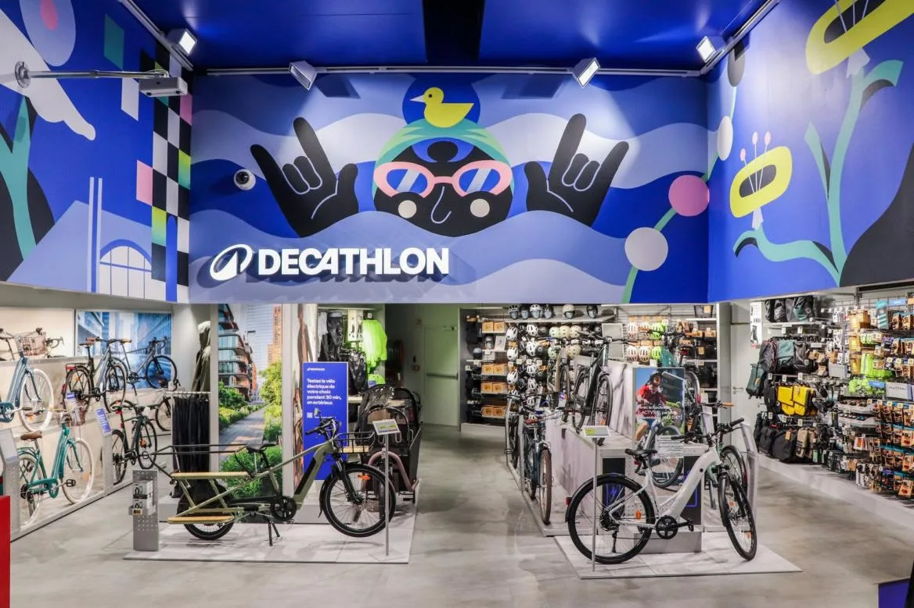

Stratégie créative · Concepts vidéo · Paid Social
LegalStart
À quel moment se sent-on prêt à se lancer ?
Lire l’étude de cas Studio Ludo.
Studio Ludo.À quel moment se sent-on prêt à se lancer ?
Lire l’étude de cas
Que devient le matériel entre deux séances ?
Lire l’étude de casQu’attend-on d’un voyage quand on part seul ?
Lire l’étude de cas